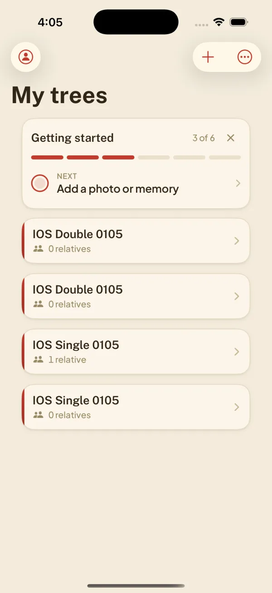
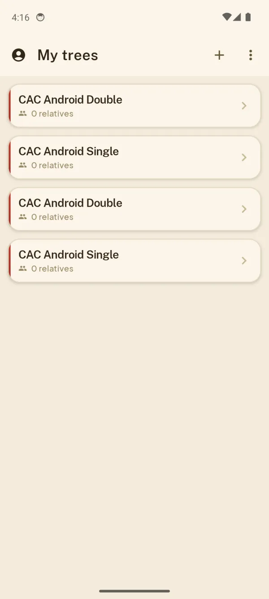

CodeAndConfirm
One agent builds, the other tries to break it. Codex opens your iOS and Android apps, runs user flows, and returns a verdict pinned to the tested commit.
Alpha, macOS first. A community project, not an official Anthropic or OpenAI product.
See it catch a bug
A demo branch had a planted defect: it sent a second create call, so every new tree was saved twice. Codex tested both apps, compared them with the base build, and found two stored records where there should be one. The gate returned FAIL.




| Platform, submission | Candidate | Base |
|---|---|---|
| iOS, single tap | 2 | 1 |
| iOS, rapid double tap | 2 | 1 |
| Android, single tap | 2 | 1 |
| Android, rapid double tap | 2 | 1 |
Report excerpt, identifiers omitted
A recorded run from September 6, 2026, with synthetic names and a local Firebase emulator. The three blocking findings came from the review, iOS, and Android workers and describe the same planted defect. Images here are resized copies; select one for the original PNG. The demo shows detection of one injected defect, not coverage of every flow. Base comparison and provenance.
Who it is for
Developers who let a coding agent change an iOS or Android app and want device-level evidence before they merge. It reviews a committed branch or an existing PR, and the bundled Claude skill can run it before a PR opens.
It runs on your Mac against simulators and emulators. You will need:
Python 3.11+ and uv
To install the CLI.
Xcode and idb
For the iOS Simulator.
Android SDK and your app's JDK
For the Android Emulator.
Codex CLI, signed in
With access to your configured model.
Claude Code and gh
Optional: the coding-agent workflow and PRs.
Set it up
The quickest path is to hand setup to your agent. The agent setup guide covers discovery, device setup, configuration, Claude integration, and verification.
Give this to your agent
Install by hand
Tested on Apple silicon with iOS Simulator and Android Emulator. Tool setup.
Configure your app repository
From the app repository you want to test:
Edit the generated codeandconfirm.toml for your app's build commands, artifacts, identifiers, suites, backend, and required journeys. Then run codeandconfirm doctor. This setup is required. Walkthrough, example config.
Review a branch or an existing PR
Commit your change first. Create criteria.md with the behaviors to check:
From the configured app repository, choose one:
Both use isolated worktrees. Add --merge-candidate to test a PR's merge candidate, or --publish to post the report and commit status. Reports stay local by default. Use codeandconfirm report <run-id> to read the result.
Let Claude request QA
Install the Claude skill first: agent-led setup does it, or follow the manual skill installation. The skill runs the repair loop. Tell Claude:
For enforcement, add the pre-PR hook and the server-side check. Codex can also be the lead.
Trusted-candidate QA runs unsandboxed and executes build scripts. Read the trust boundaries first. Fork PRs get static-only review by default.
How it works
The coordinator checks out the candidate, prepares the backend, builds and installs the apps, runs native suites, and starts independent review, iOS, and Android workers. The gate checks their evidence and writes the report.
Scrolls sideways on narrow screens. Workflow and verdict rules.
Devices, driven by Codex
Workers operate the apps through ccdevice: accessibility inspection, taps, typing, scrolling, screenshots, and logs. iOS uses simctl and idb; Android uses adb and uiautomator. Input is device-scoped, so both platforms can run in parallel.
An evidence gate
The gate checks native-suite results, required journeys, build identity, model identity, and evidence. A worker saying "PASS" is not enough.
- PASS
- Required suites and journeys passed with evidence, identities verified, no finding at or above
block_severity. - FAIL
- A required test or journey failed, a blocking defect was found, a build failed, or the candidate changed during QA.
- BLOCKED
- Required coverage could not be obtained, such as an unavailable device or missing evidence.
- CANCELLED
- The run was cancelled.
Pinned to one commit
Approval records include the candidate SHA, base SHA, and configuration fingerprint. Every new commit needs a new verdict.
Status and limits
Alpha, version 0.1.0
macOS first. Tested on Apple silicon with iOS Simulator and Android Emulator. Physical devices are not supported yet.
PASS is not bug-free
The sample report passed its policy with two non-blocking findings and lists coverage gaps.
Your code reaches a model provider
Artifacts stay local, but selected code, UI context, and screenshots go to the provider. Costs and data handling.
Performance checks are preliminary
Startup and memory comparisons run on an idle host. They do not certify physical-device speed or frame pacing. Limits.